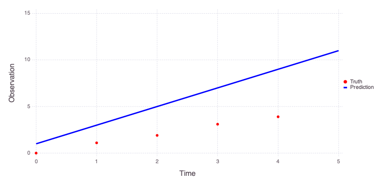
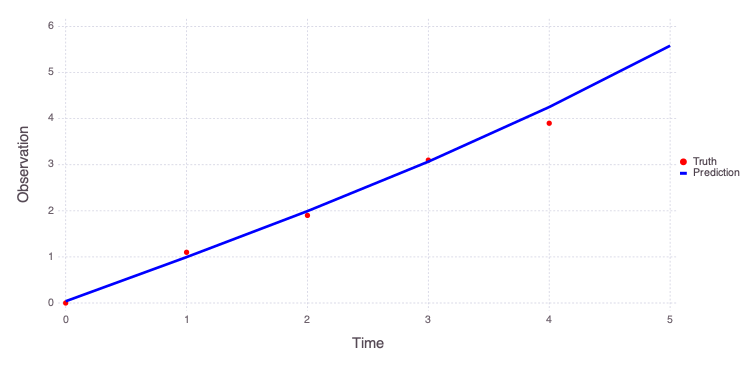
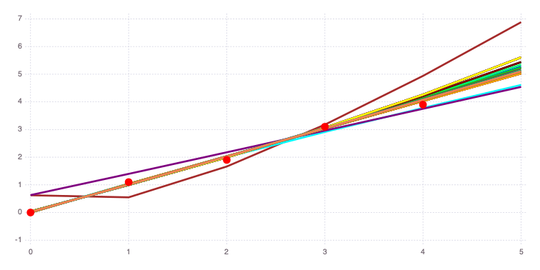
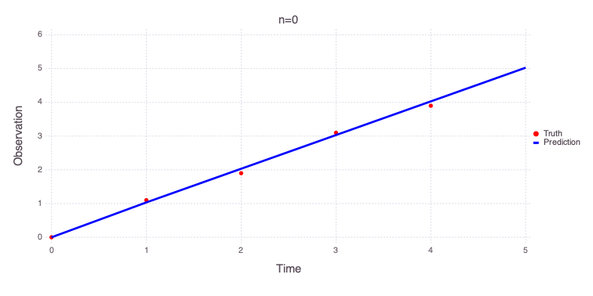
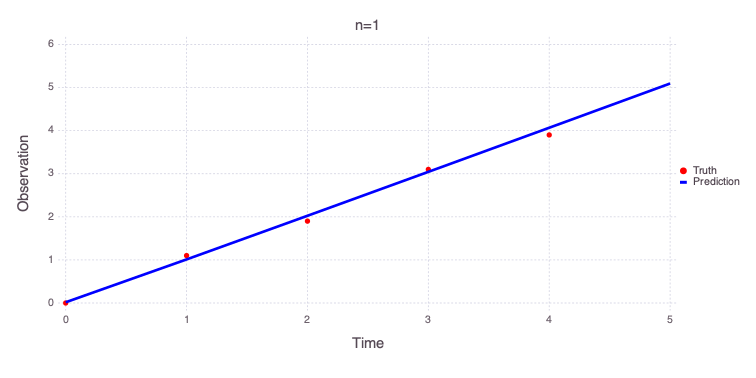
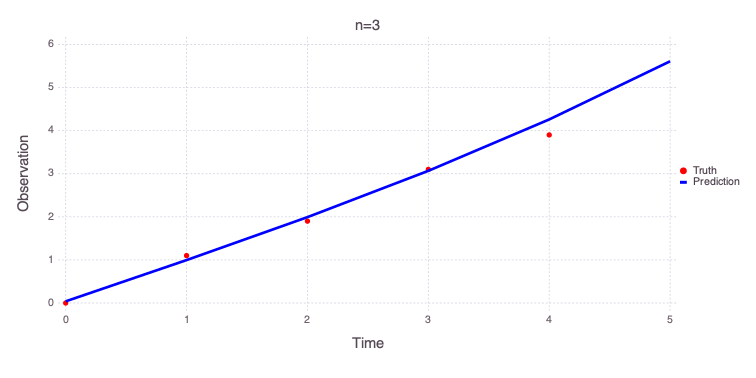
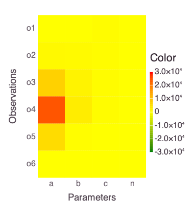
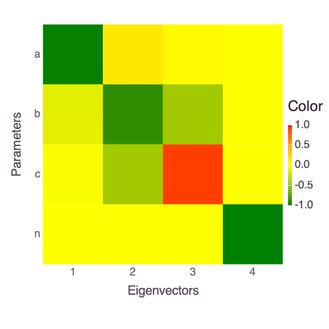
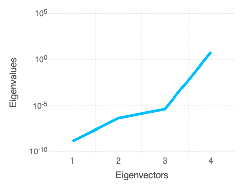

Model diagnostics
MADS is applied to solve a general model diagnostic problem.
By performing model diagnostics, we want to better understand:
- how the model inputs impact model outputs?
- how observed data related to the model outputs can be applied to learn more about the model inputs?
A Jupyter notebook of this problem is also available (Jupyter)
Problem setup
Setup the model:
A function (called polynomial) is defined to compute the 6 observations given the 4 model parameters as an input:
function polynomial(parameters::AbstractVector{<:Real})::Vector{Float64}
predictions::Vector{Float64} = [
Float64(parameters[1] * t^parameters[4] + parameters[2] * t + parameters[3]) for t in 0:5
]
return predictions
endThis function will be applied in the model diagnostics analyses presented below.
Much more complicated functions including external numerical simulators can be applied as well. Checkout Model Coupling
Setup the problem dictionary (method #1)
A problem dictionary is applied to store all the information related to the analyzed problem.
The problem dictionary with this information is created as follows:
md = Mads.createproblem([1, 1, 1, 1], # parameter initial guesses
[0, 1.1, 1.9, 3.1, 3.9, 5], # observations
polynomial; # function call to execute the model
paramkey=["a", "b", "c", "n"], # parameter names
paramdist=["Uniform(-10, 10)", "Uniform(-10, 10)", "Uniform(-5, 5)", "Uniform(0, 3)"], # parameter uncertainties
obsweight=[100, 100, 100, 100, 10, 0], # observation weights
obstime=[0, 1, 2, 3, 4, 5], # observation times
obsdist=["Uniform(0, 1)", "Uniform(0, 2)", "Uniform(1, 3)", "Uniform(2, 4)", "Uniform(3, 5)", "Uniform(4, 6)"], # observation uncertainties
problemname="model_diagnostics" # Problem name
)Dict{Any, Any} with 4 entries:
"Julia function" => polynomial
"Parameters" => OrderedCollections.OrderedDict{Any, Any}("a"=>OrderedColl…
"Observations" => OrderedCollections.OrderedDict{Any, Any}("o1"=>OrderedCol…
"Filename" => "model_diagnostics.mads"The problem dictionary includes information about:
- parameter names (
["a", "b", "c", "n"]) - parameter initial guesses (
[1, 1, 1, 1]) - parameter prior distributions (
["Uniform(-10, 10)", "Uniform(-10, 10)", "Uniform(-5, 5)", "Uniform(0, 3)"], i.e., prior parameter uncertainties) - true observation values that we want to reproduce (
[0, 1.1, 1.9 3.1, 3.9 ,5]) - observation distributions (i.e., uncertainty ranges or measurement errors)
- observation weights (
[100, 100, 100, 100, 10, 0]; the higher the weight; the higher the observation importance) - observation times (
[0, 1, 2, 3, 4, 5]) at which observations are made
The 6 observations are automatically labelled as (o1, o2, o3, o4, o5 and o6).
The observations are values that we want to reproduce with our model.
They can be also called calibration targets.
For each observation (calibration target), we specify observation weight (i.e., the inverse of measurement standard deviations).
Zero observation weight implies that the observation is unknown (potentially occurring in the future) and will be estimated (predicted) by the developed model.
Acceptable ranges are defined for each observation representing observation uncertainties.
Setup the problem dictionary (method #2)
The same problem dictionary can be created in a step-by-step fashion which is slightly more explicit.
Setup empty dictionary:
md::Dict{String,Any} = Dict{String,Any}()Setup model parameters:
md["Parameters"], _, _ = Mads.createparameters([1, 1, 1, 1];
key=["a", "b", "c", "n"],
dist=["Uniform(-10, 10)", "Uniform(-10, 10)", "Uniform(-5, 5)", "Uniform(0, 3)"])OrderedCollections.OrderedDict{Any, Any} with 4 entries:
"a" => OrderedCollections.OrderedDict{String, Any}("init"=>1, "type"=>"opt", …
"b" => OrderedCollections.OrderedDict{String, Any}("init"=>1, "type"=>"opt", …
"c" => OrderedCollections.OrderedDict{String, Any}("init"=>1, "type"=>"opt", …
"n" => OrderedCollections.OrderedDict{String, Any}("init"=>1, "type"=>"opt", …There are 4 model parameters (a, b, c, and n).
The initial values and the prior distributions (based on prior knowledge of the parameter uncertainty) are defined for each parameter.
Setup model observations:
md["Observations"] = Mads.createobservations([0, 1.1, 1.9, 3.1, 3.9 ,5];
weight=[100, 100, 100, 100, 10, 0],
time=[0, 1, 2, 3, 4, 5],
dist=["Uniform(0, 1)", "Uniform(0, 2)", "Uniform(1, 3)", "Uniform(2, 4)", "Uniform(3, 5)", "Uniform(4, 6)"])OrderedCollections.OrderedDict{Any, Any} with 6 entries:
"o1" => OrderedCollections.OrderedDict{String, Any}("target"=>0.0, "weight"=>…
"o2" => OrderedCollections.OrderedDict{String, Any}("target"=>1.1, "weight"=>…
"o3" => OrderedCollections.OrderedDict{String, Any}("target"=>1.9, "weight"=>…
"o4" => OrderedCollections.OrderedDict{String, Any}("target"=>3.1, "weight"=>…
"o5" => OrderedCollections.OrderedDict{String, Any}("target"=>3.9, "weight"=>…
"o6" => OrderedCollections.OrderedDict{String, Any}("target"=>5.0, "weight"=>…Setup the model
The polynomial function is set up now in the md dictionary as a model that will be applied to perform the simulations:
Mads.setmodel!(md, polynomial)The analyzed model captured in the problem dictionary can be:
- analytical or numerical
- internal or external (e.g., PFLOTRAN, FEHM, or any other simulator)
The model can also be a reduced-order model developed using machine learning.
Set a default name for MADS input / output files:
md["Filename"] = "model_diagnostics.mads"Now, the problem dictionary md is fully defined:
display(md)Dict{Any, Any} with 4 entries:
"Julia function" => polynomial
"Parameters" => OrderedCollections.OrderedDict{Any, Any}("a"=>OrderedColl…
"Observations" => OrderedCollections.OrderedDict{Any, Any}("o1"=>OrderedCol…
"Filename" => "model_diagnostics.mads"And the model diagnostic problem is set up!
We can also double check the problem setup.
Mads.showparameters(md)a = 1 distribution = Uniform(-10, 10)
b = 1 distribution = Uniform(-10, 10)
c = 1 distribution = Uniform(-5, 5)
n = 1 distribution = Uniform(0, 3)
Number of optimizable parameters: 4Mads.showobservations(md)o1 target = 0 weight = 100
o2 target = 1.1 weight = 100
o3 target = 1.9 weight = 100
o4 target = 3.1 weight = 100
o5 target = 3.9 weight = 10
o6 target = 5 weight = 0
Number of observations is 6Forward model simulation
A single forward model run based on the initial model parameter values can be executed as follows:
Mads.forward(md)OrderedCollections.OrderedDict{Any, Float64} with 6 entries:
"o1" => 1.0
"o2" => 3.0
"o3" => 5.0
"o4" => 7.0
"o5" => 9.0
"o6" => 11.0The forward model run can also be executed using the following command:
polynomial(Mads.getparamsinit(md))6-element Vector{Float64}:
1.0
3.0
5.0
7.0
9.0
11.0The runs above produce outputs representing model predictions at the six observations over time.
The forward simulations are based on the initial guesses for the model parameters.
The initial model predictions look like this:
Mads.plotmatches(md)
The figure above shows that the true observations are not well reproduced by the model using the initial model parameter guesses.
Model calibration
The calibration (inversion) of the developed model is achieved using the following command:
calibration_result::Tuple = Mads.calibrate(md; store_optimization_progress=false)
calibrated_parameters::AbstractDict = calibration_result[1]The calibration call returns a tuple whose first entry is the calibrated parameter dictionary and whose second entry contains optimization diagnostics.
The obtained model predictions can be plotted:
Mads.plotmatches(md, calibrated_parameters)
Initial values of the model parameters are:
Mads.showparameterestimates(md)a = 1 distribution = Uniform(-10, 10)
b = 1 distribution = Uniform(-10, 10)
c = 1 distribution = Uniform(-5, 5)
n = 1 distribution = Uniform(0, 3)
Number of optimizable parameters: 4Estimated values of the model parameters based on the model calibration (inversion) are:
Mads.showparameterestimates(md, calibrated_parameters)a = 0.00705046 distribution = Uniform(-10, 10)
b = 0.95069 distribution = Uniform(-10, 10)
c = 0.0385415 distribution = Uniform(-5, 5)
n = 2.93219 distribution = Uniform(0, 3)
Number of optimizable parameters: 4Model calibration with random initial guesses
The model inversion can also be performed for a set of random initial guesses for model parameters.
random_calibration_result::Tuple = Mads.calibraterandom(md, 100; seed=2021, all_results=true, save_results=false, store_optimization_progress=false)
calibration_objectives::Vector{Float64} = random_calibration_result[3]
calibration_parameters::Matrix{Float64} = random_calibration_result[4]The current API returns the objective values as a vector and the parameter estimates as a 100 × 4 matrix, with one calibration per row.
Plot the final predictions of the 100 random-initial-guess inverse runs:
forward_predictions::Matrix{Float64} = Mads.forward(md, calibration_parameters)
Mads.spaghettiplot(md, forward_predictions)
The results and figure above demonstrate that several parameter combinations can produce similarly good fits.
There are three important groups of results with different n values:
n= 0n= 1n= 3 (capturing the upper prior bound)
The code below plots the calibrated solutions closest to these three reference values. Using argmin keeps the example reproducible even when a random seed does not place a solution inside a fixed tolerance band.
parameter_names::Vector{String} = string.(Mads.getoptparamkeys(md))
n_values::Vector{Float64} = calibration_parameters[:, 4]
representative_indices::Vector{Int} = [
argmin(abs.(n_values)),
argmin(abs.(n_values .- 1.0)),
argmin(abs.(n_values .- 3.0)),
]
solution_names::Vector{String} = ["closest to n=0", "closest to n=1", "closest to n=3"]
representative_parameters::Vector{Dict{String,Float64}} = [
Dict{String,Float64}(zip(parameter_names, calibration_parameters[index, :])) for index in representative_indices
]
for solution_index in eachindex(solution_names)
println("Solution $(solution_names[solution_index])")
Mads.showparameters(md, representative_parameters[solution_index])
Mads.plotmatches(md, calibration_parameters[representative_indices[solution_index], :]; title=solution_names[solution_index])
end
Solution closest to n=0
a = 0.0354613 distribution = Uniform(-10, 10)
b = 0.998702 distribution = Uniform(-10, 10)
c = 1.70238e-05 distribution = Uniform(-5, 5)
n = 0.000376271 distribution = Uniform(0, 3)
Number of optimizable parameters: 4

Solution closest to n=1
a = -0.28542 distribution = Uniform(-10, 10)
b = 1.27948 distribution = Uniform(-10, 10)
c = 0.0178456 distribution = Uniform(-5, 5)
n = 0.951994 distribution = Uniform(0, 3)
Number of optimizable parameters: 4
Solution closest to n=3
a = 0.00653517 distribution = Uniform(-10, 10)
b = 0.950689 distribution = Uniform(-10, 10)
c = 0.039249 distribution = Uniform(-5, 5)
n = 3 distribution = Uniform(0, 3)
Number of optimizable parameters: 4Sensitivity and uncertainty analyses
Local sensitivity and uncertainty quantification
local_sensitivity::AbstractDict = Mads.localsa(md; filename="model_diagnostics.png", par=Float64.(collect(values(calibrated_parameters))), datafiles=false)Dict{String, Any} with 6 entries:
"of" => 233.373
"jacobian" => [0.0 0.0 498.96 0.0; 998.299 989.063 498.96 0.0; … ; 5815.86…
"covar" => [9.60666e-7 -1.96149e-6 6.59975e-7 -0.00248792; -1.96149e-6 …
"eigenmatrix" => [-0.99148 0.126137 0.0324964 0.000380915; -0.128081 -0.89869…
"eigenvalues" => [1.36761e-9, 4.44737e-7, 4.31592e-6, 6.53143]
"stddev" => [0.000980135, 0.00217703, 0.00198921, 2.55567]local_sensitivity["stddev"] defines the estimated posterior uncertainties in the estimated model parameters.
This estimate is based on the Jacobian / Hessian matrix estimates of the parameter space curvature in the vicinity of the estimated (inverted) optimal parameters.
The uncertainties are assumed to be Gaussian with standard deviations defined by local_sensitivity["stddev"].
[Mads.getparamlabels(md) local_sensitivity["stddev"]]4×2 Matrix{Any}:
"a" 0.000980135
"b" 0.00217703
"c" 0.00198921
"n" 2.55567Based on these results, c is well constrained. n is also well defined. In contrast, a and b are less certain.
However, because of the local nature of the estimates, these results are not very accurate and differ with the global sensitivity and uncertainty analyses presented below.
The plots below show a series of graphical representations of the local_sensitivity results. These plots are generated automatically by the code.
A plot of the Jacobian representing the relationships between model parameters and estimated observations:
Mads.display("model_diagnostics-jacobian.png")
A plot of the eigen matrix of the Hessian (the Hessian is approximately computed based on the Jacobian above):
Mads.display("model_diagnostics-eigenmatrix.png")
A plot of the eigen values of the Hessian matrix:
Mads.display("model_diagnostics-eigenvalues.png")
The local eigen analysis suggests a strong tradeoff between a and b, which is expected from the model form.
The large local standard deviation for n means that n is weakly constrained near this calibrated solution.
Local covariance describes the neighborhood of one solution and should not be interpreted as proof that parameters are globally independent.
Global sensitivity and uncertainty analyses
Affine Invariant MCMC
Our module AffineInvariantMCMC.jl (aka EMCEE) is applied to sample posterior parameter and prediction uncertainty:
mcmc_result::Tuple = Mads.emceesampling(md; numwalkers=10, nexecutions=100000, burnin=10000, thinning=10, seed=2016, sigma=0.01, save=false)
mcmc_chain::Matrix{Float64} = mcmc_result[1]
mcmc_predictions::Matrix{Float64} = mcmc_result[3]The results above capture 10,000 equally likely parameter combinations.
The parameter combinations represent posterior uncertainty conditional on the observations and priors. They are distinct from the prior global-sensitivity calculations below.
The matching model predictions are returned with the chain:
mcmc_predictionsMads.spaghettiplot(md, mcmc_predictions)When executed, the generated figure compares the 10,000 model predictions with the actual measurements (red dots).
The next command generates histograms of the posterior model uncertainties (along the diagonal) and cross-plots between the parameters (off-diagonal; the cross-plots above and below the diagonal are similar):
Mads.scatterplotsamples(md, permutedims(mcmc_chain), "model_diagnostics-emcee_scatter.png")Mads.display("model_diagnostics-emcee_scatter.png")The posterior has several ridges rather than one uniquely identified parameter vector.
Parameter c is the most tightly constrained, while a and b exhibit a strong inverse tradeoff.
When a is close to zero, the data carry little information about n, so a wide range of n values remains plausible.
Near n = 1, a and b can compensate for one another because both terms are nearly linear in time.
Saltelli (Sobol) and eFAST global sensitivity analyses
Both methods are designed to perform global sensitivity analyses.
They provide independent estimates that can be compared, but agreement should be checked from the reported indices rather than assumed.
The Saltelli (Sobol) results are obtained as follows:
saltelli_results::AbstractDict = Mads.saltelli(md; N=10000, seed=2016, save=false)Mads.plotobsSAresults(md, saltelli_results)The eFAST results are obtained as follows:
efast_results::AbstractDict = Mads.efast(md; N=1000, seed=2016, save=false)
Mads.plotobsSAresults(md, efast_results; filename="sensitivity_efast.png", xtitle="Time [-]", ytitle="Observation [-]")The differences in the total and main effect plots suggest correlations in the model parameters (which is also demonstrated by the AffineInvariantMCMC analyses above).
The generated figures also demonstrate that parameter sensitivity to observations changes over time.
Based on the total effect, parameter a and n sensitivities generally increase with time. Parameter b and c sensitivities generally decrease with time.
Decision Analysis
Here, we perform decision Analysis using Information-Gap Decision Theory.
Define the Information-Gap Decision Theory horizons of uncertainty horizons:
horizons::Vector{Float64} = [0.001, 0.01, 0.02, 0.05, 0.1, 0.2, 0.5, 1]Define the polynomial models to be explored:
model_names::Vector{String} = ["y = a * t + c", "y = a * t^(1.1) + b * t + c", "y = a * t^n + b * t + c", "y = a * exp(t * n) + b * t + c"]Execute the infogap analyses, collect the obtained results, and produce a figure summarizing the results:
import Gadfly
import Colors
minimum_layers::Vector{Any} = Vector{Any}(undef, 4)
maximum_layers::Vector{Any} = Vector{Any}(undef, 4)
colors::Vector{String} = ["blue", "red", "green", "orange"]
for model_index in 1:4
minimum_predictions::Vector{Float64}, maximum_predictions::Vector{Float64} = Mads.infogap_jump_polynomial(model=model_index, plot=true, horizons=horizons, retries=10, maxiter=1000, verbosity=0, seed=2015)
minimum_layers[model_index] = Gadfly.layer(x=minimum_predictions, y=horizons, Gadfly.Geom.line, Gadfly.Theme(line_width=2Gadfly.pt, line_style=[:dash], default_color=Base.parse(Colors.Colorant, colors[model_index])))
maximum_layers[model_index] = Gadfly.layer(x=maximum_predictions, y=horizons, Gadfly.Geom.line, Gadfly.Theme(line_width=2Gadfly.pt, line_style=[:solid], default_color=Base.parse(Colors.Colorant, colors[model_index])))
end
figure::Gadfly.Plot = Gadfly.plot(minimum_layers..., maximum_layers..., Gadfly.Guide.xlabel("o5"), Gadfly.Guide.ylabel("Horizon of uncertainty"), Gadfly.Guide.title("Opportuneness vs. Robustness"), Gadfly.Theme(highlight_width=0Gadfly.pt), Gadfly.Guide.manual_color_key("Models", model_names, colors))
Gadfly.draw(Gadfly.PNG("infogap_opportuneness_vs_robustness.png", 6Gadfly.inch, 4Gadfly.inch), figure)Mads.display("infogap_opportuneness_vs_robustness.png")The generated figure compares model opportuneness (dashed lines) with model robustness (solid lines) for different Information-Gap horizons of uncertainty and models (different colors).
The model opportuneness defines that the things might get better than expected (i.e., observation at dimensionless time 5 o5 can get lower than expected).
The model robustness defines that things might get worse than expected (i.e., observation at dimensionless time 5 o5 can get higher than expected).
Based on both the model opportuneness and model robustness, the last model is the most complex and can bring the most surprises. The first model is the simplest and produces the lower level of surprises.
In terms of model selection, the simplest model is the best. However, the alternative models (if they capture all the conceptual model uncertainties) represent how much things can get worse/better within the horizon of uncertainty.